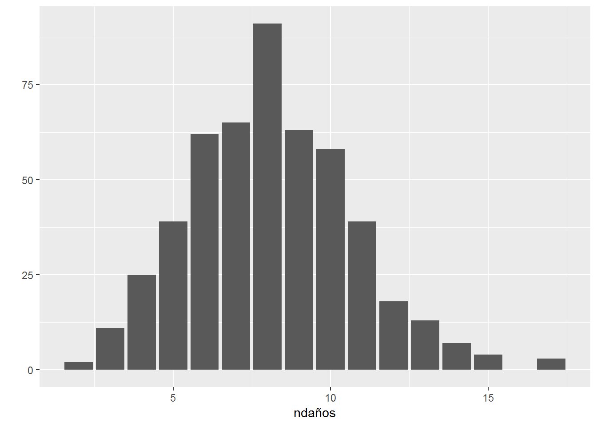
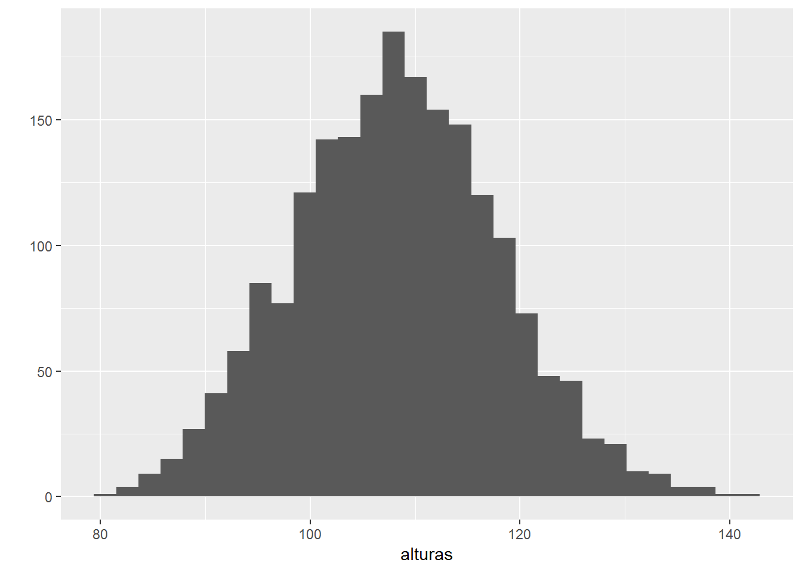

2 Muestreo
Aplicaciones
- Estudios observacionales (Muestreo versus Censo): en muchos casos, es demasiado caro y poco factible obtener datos de cada unidad de la población de estudio.
- Evaluación del error (bootstrap, cross-validation): evaluación empírica de la precisión de los métodos de inferencia y predicción.
¿Qué es el muestreo?
Algunas definiciones:
- “Sampling consists of selecting some part of a population to observe so that one may estimate something about the whole population.”
(S. Thompson, 1992).
- “We are all accustomed to the idea of sampling in everyday life. The housewife visually samples the quality of the fruit she intends to buy. (...) If the greengrocer puts the best on display and sells us inferior qualities, we protest at the biased sample or change our supplier. (...) The notion of bias is not long the notion of sampling itself.”
(A. Stuart, 1983).
Objetivo del muestreo
La Representatividad
- Evitar el sesgo de selección (exclusión sistema de parte de la población)
- Maximizar la representatividad (muestra = población a pequeña escala).
- Reducir los costes de recogida de datos.
- Controlar el error muestral.
Error muestral
Variación entre muestras
- Es consecuencia de nuestra observación parcial de la población.
- Corresponde a la variación de las conclusiones entre muestras.
- Es un error de naturaleza aleatoria que decrece a medida que aumenta el tamaño muestral.
- No debe ser confundido con el sesgo (o error sistemático)
Error sistemático
Sesgo de selección y de información
- Distorsión en las conclusiones que ocurre de manera sistemática (afecta a todas la muestras).
Se puede clasificar según el sesgo ocurre a nivel del muestreo o en la medición:
- Sesgo de selección: ocurre cuando la selección de los individuos está condicionada por la característica que queremos medir.
- Sesgo de información: sesgo que ocurre en la medición de la característica de interés. Sesgo de memoria, efecto del entrevistador o del cuestionario, .…
Dos ejemplos de sesgo de selección:
No respuesta
Durante la Segunda Guerra Mundial, el estadístico Abraham Wald fue invitado a ayudar a los británicos a decidir dónde añadir armadura a sus bombarderos. Después de analizar los aviones que volvieron, recomendó reforzar los sitios donde no hubo impacto!
- Una selección aleatoria de las unidades permite evitar el sesgo de selección.
Muestreo aleatorio simple
Es el diseño de muestreo más sencillo y se caracteriza por el hecho de que cada posible muestra de \(n\) unidades tiene la misma probabilidad de ser seleccionada.
Implementación
Se obtiene una muestra aleatoria simple de la siguiente manera:
Asignar un número de \(1\) a \(N\) a cada unidad de la población elegible.
Elegir \(n\) de estos números mediante el uso de algún proceso aleatorio (tablas o generador de números aleatorios)
Las unidades correspondientes a los números elegidos se toman como muestra.
##### Implementación del muestero aleatorio simple en R #####
state.name # la lista de estados americanos como Población## [1] "Alabama" "Alaska" "Arizona" "Arkansas"
## [5] "California" "Colorado" "Connecticut" "Delaware"
## [9] "Florida" "Georgia" "Hawaii" "Idaho"
## [13] "Illinois" "Indiana" "Iowa" "Kansas"
## [17] "Kentucky" "Louisiana" "Maine" "Maryland"
## [21] "Massachusetts" "Michigan" "Minnesota" "Mississippi"
## [25] "Missouri" "Montana" "Nebraska" "Nevada"
## [29] "New Hampshire" "New Jersey" "New Mexico" "New York"
## [33] "North Carolina" "North Dakota" "Ohio" "Oklahoma"
## [37] "Oregon" "Pennsylvania" "Rhode Island" "South Carolina"
## [41] "South Dakota" "Tennessee" "Texas" "Utah"
## [45] "Vermont" "Virginia" "Washington" "West Virginia"
## [49] "Wisconsin" "Wyoming"sample(state.name,size=5) #muestra aleatoria simple de 5 estados## [1] "Idaho" "Wisconsin" "Delaware" "New Mexico" "Missouri"#sample(state.name,size=200) ## Error!!
muestra=sample(state.name,size=200,replace=TRUE) #muestreo con reposición
table(muestra)## muestra
## Alabama Alaska Arizona Arkansas California
## 3 3 6 5 1
## Colorado Connecticut Delaware Florida Georgia
## 2 3 11 3 3
## Idaho Illinois Indiana Iowa Kansas
## 1 3 5 5 7
## Kentucky Louisiana Maine Maryland Massachusetts
## 2 6 2 4 4
## Michigan Minnesota Mississippi Missouri Montana
## 5 2 4 1 7
## Nebraska Nevada New Hampshire New Jersey New Mexico
## 6 3 7 3 4
## New York North Carolina North Dakota Ohio Oklahoma
## 2 4 3 3 7
## Oregon Pennsylvania Rhode Island South Carolina South Dakota
## 2 5 6 2 5
## Tennessee Texas Utah Vermont Virginia
## 8 3 4 5 6
## Washington West Virginia Wisconsin Wyoming
## 4 2 3 5Ventajas y limitaciones
- Procedimiento equiprobabilístico: todas las unidades de la población tienen la misma probabilidad de ser elegidas. Con lo cual, media y proporciones se estiman directamente mediante su equivalente muestral.
- Pero, es en general poco eficiente (algunas muestras pueden ser poco representativas).
Muestreo estratificado
Se puede mejorar notablemente la representatividad de la muestra estratificando el muestreo.
Si la afijación del tamaño muestral en cada estrato es proporcioinal a su tamaño, obtendremos una muestra equiprobabilistica.
##### Muestreo de una base de datos #####
require(tidyverse)
require(readxl) #para leer fichero de excel en R
## Precios de la gasolina 98 en España
gasolineras = read_excel("data/gasolineras.xls",skip=3) #Fuente: https://geoportalgasolineras.es
gasolineras## # A tibble: 6,495 x 10
## Provincia Localidad Dirección Margen `Toma de datos` Precio Rótulo
## <chr> <chr> <chr> <chr> <chr> <dbl> <chr>
## 1 SANTA CR~ GRANADIL~ CARRETER~ D 09/01/2019 11:~ 0.928 PCAN
## 2 SANTA CR~ CUESTA, ~ AVENIDA ~ D 09/01/2019 09:~ 0.934 PCAN
## 3 SANTA CR~ LA LAGUNA PLAZA SA~ N 09/01/2019 06:~ 0.935 TGAS
## 4 SANTA CR~ LA LAGUNA GLORIETA~ N 09/01/2019 13:~ 0.935 DISA ~
## 5 SANTA CR~ BALDIOS,~ CARRETER~ D 09/01/2019 00:~ 0.935 TGAS ~
## 6 SANTA CR~ SAN CRIS~ AVENIDA ~ N 09/01/2019 13:~ 0.935 SHELL~
## 7 SANTA CR~ SANTA CR~ CALLE SU~ D 09/01/2019 10:~ 0.935 CANAR~
## 8 SANTA CR~ GUANCHA ~ CARRETER~ D 08/01/2019 06:~ 0.937 TGAS ~
## 9 SANTA CR~ GUANCHA ~ AVENIDA ~ N 09/01/2019 11:~ 0.937 PCAN
## 10 SANTA CR~ REALEJOS~ CARRETER~ N 10/01/2019 12:~ 0.937 PCAN ~
## # ... with 6,485 more rows, and 3 more variables: `Tipo venta` <chr>,
## # Rem. <chr>, Horario <chr>summary(gasolineras$Precio) #resumen de la distribución del precio## Min. 1st Qu. Median Mean 3rd Qu. Max.
## 0.928 1.313 1.339 1.327 1.365 1.549n=250 # tamaño muestral
muestra <- gasolineras %>% sample_n(size=n)
summary(muestra$Precio) #distribución del precio en la muestra## Min. 1st Qu. Median Mean 3rd Qu. Max.
## 0.979 1.319 1.339 1.331 1.369 1.425#### Muestreo estratificado (proporcional) ####
muestra <- gasolineras %>% group_by(Provincia) %>% sample_frac(.1) # 1% en cada provincia
muestra %>% summarise(media=mean(Precio),n = n())## # A tibble: 51 x 3
## Provincia media n
## <chr> <dbl> <int>
## 1 ÁLAVA 1.36 4
## 2 ALBACETE 1.31 9
## 3 ALICANTE 1.34 29
## 4 ALMERÍA 1.34 10
## 5 ASTURIAS 1.37 14
## 6 ÁVILA 1.34 4
## 7 BADAJOZ 1.33 9
## 8 BALEARS (ILLES) 1.39 15
## 9 BARCELONA 1.36 54
## 10 BURGOS 1.34 8
## # ... with 41 more rows
Estratificar la muestra por fecha de toma de datos (no tomar en cuenta la hora! Para ello, Utilizar la función separate).
Muestreo de una población teorica
- Existen modelos (o arquetipos) de distribución que simplifican considerablemente el análisis de los fenómenos aleatorios.
- Estos modelos de distribución descansan sobre dos hipótesis básicas:
- Homogeneidad (los sujetos de la población tienen la misma probabilidad de enfermar)
- Independencia (la enfermedad ocurre de manera independiente en cada sujeto)
- A pesar de que en practica estas hipótesis no se cumplen de manera estricta, estos modelos
- proporcionan en muchas ocasiones una buena aproximación.
- permiten definir una marco teórico (o población teórica) a contrastar con la realidad.
Distribución Binomial
Así, podríamos suponer que todas las manzanas que llegan a un supermercado tienen la misma probabilidad \(p\) de dañarse después de un día en cámara fría y que estos daños ocurren de manera independientes (¡dudoso!). Entonces, el número de frutas dañadas en una caja de \(n\) manzanas se distribuye como una distribución binomial \(B(n,p)\).
n=40
p=.2 #probabilidad de daño igual al 20%
ndaños=rbinom(500,n,p) #simulación del número de frutas dañadas en 500 cajas de n manzanas
ndaños## [1] 8 7 8 8 7 6 17 5 6 8 10 10 6 8 11 4 7 13 8 12 8 6 9
## [24] 5 8 8 6 9 8 8 4 7 12 13 8 4 9 8 8 6 7 8 8 7 7 5
## [47] 10 4 7 13 10 8 9 9 8 4 7 6 5 13 11 6 8 13 7 4 11 11 7
## [70] 6 8 9 7 5 6 9 6 7 14 5 7 12 9 6 7 10 5 13 6 6 11 7
## [93] 7 8 12 5 8 8 3 7 10 6 5 5 4 8 7 6 12 7 14 11 10 11 13
## [116] 4 8 6 6 7 10 11 10 9 11 6 10 8 5 10 10 6 11 5 7 6 7 9
## [139] 7 12 6 9 10 10 10 4 4 5 9 6 12 7 6 6 8 10 8 7 8 8 8
## [162] 6 8 7 5 6 5 10 9 11 9 10 8 11 10 10 10 8 9 11 7 5 11 4
## [185] 5 7 6 15 8 7 14 12 7 5 8 11 7 6 7 8 10 8 8 8 6 6 11
## [208] 8 7 12 9 6 12 10 11 5 3 10 8 9 8 7 8 6 8 9 10 9 8 10
## [231] 14 8 10 8 7 3 12 10 11 8 9 3 10 4 4 8 6 5 11 11 11 5 9
## [254] 10 5 14 11 9 13 9 11 8 8 8 15 5 12 8 10 8 4 9 9 9 5 8
## [277] 5 8 17 8 6 8 4 7 8 7 4 7 9 9 9 6 7 11 6 7 11 6 6
## [300] 8 5 5 10 6 13 11 9 10 11 10 8 5 9 6 6 9 10 9 9 11 11 10
## [323] 9 6 9 8 8 8 4 9 8 3 6 10 8 11 7 9 17 7 9 6 6 3 6
## [346] 8 8 9 12 12 6 5 8 8 9 9 5 6 6 12 10 7 9 8 9 8 10 9
## [369] 9 7 8 7 9 13 9 4 5 11 6 6 11 12 6 6 5 7 2 9 9 4 4
## [392] 10 10 10 10 9 7 2 6 7 9 6 12 8 15 9 7 7 13 7 7 10 3 8
## [415] 4 10 8 3 5 3 8 6 8 15 7 6 10 9 10 5 9 4 7 7 3 11 13
## [438] 7 6 7 4 14 8 10 11 10 4 8 5 3 10 9 11 11 7 11 10 8 8 14
## [461] 10 6 7 8 9 8 12 9 8 7 13 10 6 7 4 5 9 8 6 11 10 5 9
## [484] 11 9 10 7 8 5 9 10 8 9 10 10 7 8 8 5 7qplot(ndaños,geom="bar") #distribución empirica del número de frutas dañadas 
Distribución Normal
La distribución normal (o gaussiana) es la más utilizada para modelizar las variaciones de una variable continua. Razones principales de este éxito:
Su simplicidad (sólo depende de la media y de la desviación típica de la variable)
El Teorema Central del Limite que afirma que el promedio de un gran numero de observaciones independientes tiene aproximadamente un comportamiento normal.
Apropiada para modelizar fenómenos naturales sometidos a numerosos efectos aleatorios de pequeña magnitud (Ej.:errores de medida y medidas antropometricas en población homogénea).
####### Altura de niñas españolas de 5 años
mu=108 #altura media de las niñas (en cm)
sigma=10 #variación promedia de la altura entre niñas (en cm)
alturas=rnorm(2000,mu,sigma) #alturas de 2000 niñas seleccionadas al azar en la población
summary(alturas)## Min. 1st Qu. Median Mean 3rd Qu. Max.
## 81.19 101.44 108.20 108.25 114.75 142.57qplot(alturas) #histograma de la distribución de la altura 
mean(alturas>115) #proporción muestral de niñas con una altura superior a 115 cm## [1] 0.239pnorm(115,mu,sigma,FALSE) #probabilidad teorica (poblacional) de que una niña mida más de 115 cm## [1] 0.2419637En una fabrica, la maquina que rellena las botellas de coca-cola está calibrada para que en promedio tengan un volumen \(\mu=330\) ml. Se sabe que la maquina tiene una precisión \(\sigma=5\) ml (desviación típica del volumen de las botellas). Supongamos que en una muestra de 25 botellas sacada de la producción observamos que en promedio el volumen es igual a \(\bar{y}=327.5\) ml. ¿Podemos concluir que la maquina se ha desajustado? Asumiendo que la maquina tiene errores normales, realizar un experimento de simulación para contrastar esta hipótesis.